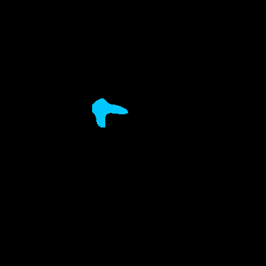
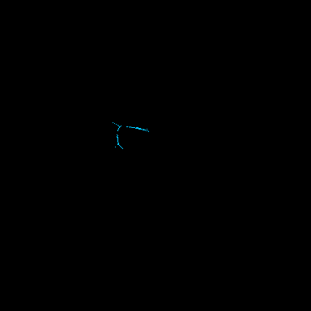

给隧道图片自动找病害
输入一张隧道图片，系统自动画出病害区域，并告诉我们：哪里像病害、结果靠不靠谱、需不需要人工复核，以及它大概在隧道什么位置。



问题不只是“能不能画出来”，而是“画得能不能信”。
病害形状容易画歪
细裂缝、折角病害很容易被模型画成一块规整区域，看起来不像真实病害。
新图片没有标准答案
老师现场拖一张图进来，没有人工标注，就不能乱说 mIoU 有多高。
只给 mask 不够
还要说明为什么这么判断：面积多大、骨架多长、是否建议人工复核。
先把数据整理成统一标准，模型才学得清楚。
数据规模
统一后的类别
每张标注 mask 都转成同一套 6 类编号，这样训练、评估、网页展示才不会混乱。
系统流程：一张图进来，输出一份检测报告。
训练时
用人工标注训练模型，让它学会区分 6 类病害。
评估时
有标准答案时算 mIoU，说明模型到底准不准。
演示时
没有标准答案时，不报假分数，只展示可复核证据。
第一步：换更强的模型，让病害区域画得更像。
训练到 160000 iter；整体像素准确率 aAcc 98.62%。
| 类别 | IoU | Acc |
|---|---|---|
| 背景 | 99.01 | 99.51 |
| simple 类 | 80.23 | 88.40 |
| 块状类 | 53.58 | 75.56 |
| 管线类 | 94.16 | 97.43 |
| 竖向类 | 95.85 | 97.75 |
| 横向类 | 83.17 | 88.34 |
第二步：模型画完后，再判断哪张结果更可靠。
输入：模型输出的 single mask 和多姿态概率 比较：哪张更稳定，哪张把小病害抹掉了 选择：single / fused / hybrid 中更合适的一张 提取：uncertainty、分歧、骨架、面积、方向 校准：有 GT 时检查 uncertainty 是否对应错误 输出：风险等级、复核优先级和复核理由 结果：selected mask + review priority + 空间定位 + 可解释报告
single
如果融合把小病害抹掉，就保留单次预测。
fused
如果多姿态概率结果一致，就采用更稳定的融合结果。
hybrid
如果两者各有优点，就把可信的小缺陷补回来。
创新在哪：给模型结果加了一层“会判断、会解释”的机制。
自适应选择更可靠的 mask
系统会比较 single、fused、hybrid，不盲目相信固定融合，避免小病害被抹掉。
把 mask 变成可复核证据
输出 uncertainty、分歧、骨架、面积、方向、风险原因和 review priority，让结果能被人工检查。
把位置转成工程语言
把病害 mask 转成钟位、环号、里程，并标注 location_source 和 accuracy_level。
模块可复用、边界清楚
增强模块不绑定 SegFormer；没有 GT 不报真实 mIoU，定位也区分 simulation、calibration 和 sensor。
实验结果：固定融合会丢小病害，我们的方法能找回来。
在 1000 张有标注图片上，自适应选择结果比固定融合结果更好，说明它确实减少了融合带来的损失。
| 范围 | 图片数 | 单次预测 | 固定融合 | 自适应选择 | 提升 |
|---|---|---|---|---|---|
| 测试集 | 150 | 0.3305 | 0.3165 | 0.3306 | +0.0141 |
| 全部标注图 | 1000 | 0.3725 | 0.3287 | 0.3680 | +0.0393 |
这里的结论不是“永远超过单次预测”，而是：当固定融合把小病害抹掉时，我们的方法能减少这种损失。
它具体带来什么价值：保住小病害，提醒人复核。
保住被融合抹掉的前景
全量样本中，相比固定融合被保留下来的病害像素数量。
指出更可能出错的位置
高不确定区域里，实际属于预测错误的比例。这个值越高，说明复核提示越有用。
最终做成了一个网页：拖图片进去就能看结果。

能看多种结果
原图、病害 mask、叠加图、骨架图、风险报告都能切换。
不乱显示准确率
用户自己上传的图片没有人工标注，所以真实 mIoU 显示 N/A。
结果能解释
页面会显示 uncertainty、分歧、骨架长度、方向、risk level 和复核建议。
比赛扩展：把土建主线继续扩到轨道和设备。
Civil / 土建
当前主线已经跑通。SegFormer B1、adaptive selection、review priority、report export 都已经接好。
Track / 轨道
先用 demo adapter 接入扣件缺失等示例结果，结果统一到 multidomain schema 里，便于后续替换真实模型。
Equipment / 设备
先用设备支架松脱等示例结果演示，多领域结果和 civil 共用一套报告和 Web 展示合同。
空间定位
当前 spatial mapping 已有 prototype：能输出钟位、环号、里程和可选 local 3D；同时保留 location_source 与 location_accuracy_level，避免把仿真定位说成实测。
为什么这样讲
老师一眼就能看懂：现在已经完成的是土建主线，比赛扩展是多领域接入和统一报告，不是另起一个项目。
专利可以这样讲：不是发明模型，而是发明检测后的判断流程。
可以主张的内容
- 模型输出后，自动判断哪张 mask 更可靠
- 发现固定融合抹掉小病害的情况
- 把 mask 转成骨架、面积、方向、钟位和风险理由
- 用 source / accuracy_level 区分仿真、标定和传感器定位
不要这样夸大
- 不说自己发明了 SegFormer
- 不说自己发明了 TTA、uncertainty、骨架化
- 不说自适应选择永远比单次预测更准
- 不把图像复核建议说成结构安全结论
目前已经形成一个能展示、能解释、能继续优化的系统。
已经做到
- 整理了 6 类隧道病害数据
- 训练出 mIoU 84.33% 的 SegFormer 模型
- 实现了 probability TTA、uncertainty、分歧、风险解释和 review priority 模块
- 接入 spatial mapping，输出钟位、环号、里程、来源和精度边界
- 做出了可拖拽检测的 Web 展示
下一步可以继续做
- 重点优化 blocky 类病害
- 补充更多典型案例和消融对比
- 接入真实标定、深度或传感器数据，验证空间定位误差
- 继续做 temperature scaling 或 conformal prediction 这类更强校准方法